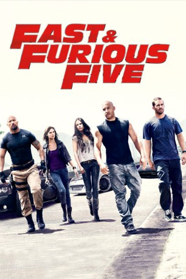
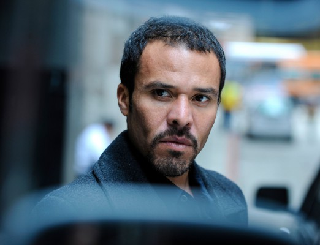

#241 Fast and Furious 5 - Fast Five
Alternativ: Fast Five
 
 IMDB-Wertung: 7.3 / 10
IMDB-Wertung: 7.3 / 10  Metascore: 66
Metascore: 66 
Nachdem Brian und Mia Toretto Dom aus der Gefangenschaft befreit haben, müssen sie auf ihrer Flucht vor den Behörden viele Landesgrenzen überqueren. In Rio de Janeiro stehen sie erneut mit dem Rücken zur Wand und sind gezwungen, ein letztes Ding zu drehen - denn nur so können sie die langersehnte Freiheit erlangen. Während sie ein Elite-Team der besten Racer zusammenstellen, wird ihnen eines klar: Um ein für alle Mal aussteigen zu können, müssen sie sich einem korrupten Unternehmer stellen, der nichts mehr will, als sie tot zu sehen. Er ist allerdings nicht der Einzige, der hinter ihnen her ist. Dem kompromisslosen Federal Agent Luke Hobbs entkommt niemand.
Jahr: 2011
Dauer: 131 Minuten
FSK: 12
Land: USA Studio: Universal PicturesTonspuren: DTS - ,
Untertitel: Deutsch,
Auflösung: 1080p (1920x816) Größe: 8867 MB
Genre: Action, Krimi, Thriller
Regisseur: Justin Lin
Drehbuch: Chris Morgan, Gary Scott Thompson
Soundtrack: Brian Tyler
Darsteller:
 Vin Diesel als Dominic Toretto
Vin Diesel als Dominic Toretto Paul Walker als Brian O'Conner
Paul Walker als Brian O'Conner Jordana Brewster als Mia
Jordana Brewster als Mia Tyrese Gibson als Roman
Tyrese Gibson als Roman Ludacris als Tej
Ludacris als Tej Matt Schulze als Vince
Matt Schulze als Vince Sung Kang als Han
Sung Kang als Han Gal Gadot als Gisele
Gal Gadot als Gisele- Tego Calderon als Leo
- Don Omar als Santos
 Joaquim de Almeida als Reyes
Joaquim de Almeida als Reyes Dwayne Johnson als Hobbs
Dwayne Johnson als Hobbs Elsa Pataky als Elena
Elsa Pataky als Elena-  Michael Irby als Zizi
 Fernando Chien als Wilkes
Fernando Chien als Wilkes Alimi Ballard als Fusco
Alimi Ballard als Fusco Yorgo Constantine als Chato
Yorgo Constantine als Chato Geoff Meed als Macroy
Geoff Meed als Macroy Joseph Melendez als Chief of Police Alemeida
Joseph Melendez als Chief of Police Alemeida- Jeirmarie Osorio als Rosa
 Mark Hicks als Capa
Mark Hicks als Capa- Corey Michael Eubanks als Lanzo
 Luis Da Silva Jr. als Diogo
Luis Da Silva Jr. als Diogo- Luis Gonzaga als Cash House Door Guard
 Benjamin Blankenship als Lead DEA Agent
Benjamin Blankenship als Lead DEA Agent- Jay Jackson als Field Reporter
- Arlene Santana als Field Reporter
 Kent Shocknek als News Anchor
Kent Shocknek als News Anchor- Lincoln de Oliveira als Dialect Coach , uncredited
- Georgy Fontanals als Diogo's Boy , uncredited
 Natalie Gal als Brazilian , uncredited
Natalie Gal als Brazilian , uncredited- Randi Lamey als Cocktail Girl , uncredited
- Jerry Lantigua als Brazilian Police , uncredited
- Blaze Luciano als Diogo's Crew , uncredited
- Justin Melick als Rio Police Officer , uncredited
 Eva Mendes als Monica Fuentes , uncredited
Eva Mendes als Monica Fuentes , uncredited- Johnny Michaels als Convict , uncredited
 Michelle Rodriguez als Letty , archive footage, uncredited
Michelle Rodriguez als Letty , archive footage, uncredited- Zach Sale als Brazilian Police Officer , uncredited
- Amanda Salinas als Party Girl , uncredited
- Richard Tavernaro als Officer Castro , uncredited
 Brian Tester als Reyes Bodyguard , uncredited
Brian Tester als Reyes Bodyguard , uncredited- Skyyler Wilmenko als Diego's men #4 , uncredited
 Esteban Cueto als Berto
Esteban Cueto als Berto- Carlos Sanchez als Evidence Technician
- Pedro García als Conductor
- Arturo Gaskins als Croupier
- Sharon Tay als News Anchor
- Andy Rosa Adler als News Anchor
- Yairim Alexandra als Extra , uncredited
Datei: X:\7+mehr(A-Z)\Fast and Furious\Fast and Furious 5 - Fast Five (2011, FSK12, 1920x816).mkv seit 15.02.2015
Festplatte: HD Collection-7+mehr(A-Z)+Person
 Es gibt insgesamt 13 Filme in der Gruppe '7+mehr(A-Z)\Fast and Furious'
Es gibt insgesamt 13 Filme in der Gruppe '7+mehr(A-Z)\Fast and Furious'